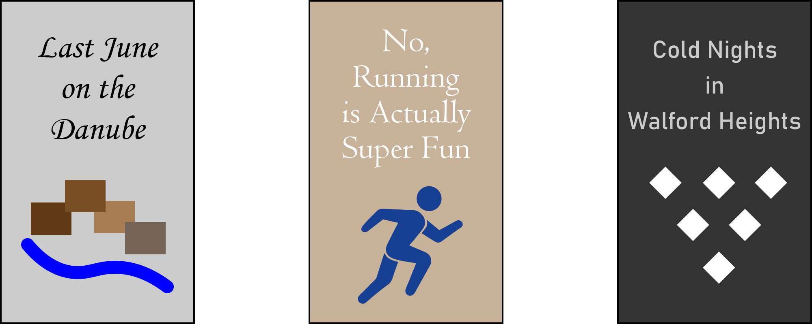

Staff Picks


Reviews
Chippewa Falls resident Alexis Johnson picked up a copy of The French Teacher's Husband and simply could not put it down. "I was hooked from the very beginning," she said. "The characters, the plot, the sheer suspense...it was the best book I read all year. The author is obviously a very gifted individual who knows how to capture human thoughts and emotions like no other. I recommend this book to absolutely everyone." Alexis has been a loyal Books 4 Less visitor since 2014.
No, Running is Actually Super Fun is a guidebook to all things running, and Johnny Lund from North Eau Claire had a fanstastic time reading it. Johnny grabbed the short book from a shelf at our store and it inspired him to run an ultra marathon in Nevada next spring. "I kind of got out of running after high school, and I needed some motivation to start again. This book gave me the boost I needed and provided so many helpful tips for runners of all distances and abilities. Thank you to employee Jane for recommending it to me." Thank you, Johnny, for being an awesome customer since 2021. Note: If anyone reading this would like to travel to Reno to watch a running race next April, Johnny would appreciate the support.
Last June on the Danube is a popular work of historical fiction and is the new favorite book of Randall Park resident Jordan Hollingsworth. "What a find. What a page-turner. What an extraordinary book," she said. Jordan picked up Last June on the Danube three months ago and finally got around to reading it last week. "I can't believe I waited so long to read this. The author does such a great job of putting you at the scene. I truly felt like I was in 1930s Budapest myself." Jordan has been a happy customer of Books 4 Less since 2017.
Kyle Reynolds from the Eastside Hill has already read Cold Nights in Walford Heights three times. He took a chance on a copy while visiting our store last month and it definitely paid off. "I was never really a fan of romantic novels. They just weren't my thing," he explained. "I honestly just picked up Cold Nights in Walford Heights because the cover looked cool. I ended up enjoying the story so much, I read it two more times. I still can't believe what Jason did. And when Alex found out? Devastating. It's no wonder he..." (Kyle went on to spoil the entire novel. Thanks Kyle.) But also thank you Kyle for being a Books 4 Less patron for three years! We appreciate you.